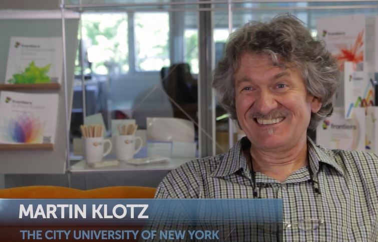

VIDEO: Analyzing ozone breakdown through molecular evolution

Ever since he was a child,
Prof.Martin Klotz
simply wanted to know.'My favorite game was in my father’s study.I was laying on the carpet with the
Brockhaus encyclopedia and I would just open a random page and read until I was tired.I was interested in all sorts of things.I was a Physics undergraduate student, I then moved into Biophysics and then Biology, simply because I wanted to know.I was curious and still am and that is what motivates me,' he said.
Klotz is the Dean of Faculty, Division of Mathematics and Natural Sciences, and a Professor in the Department of Biology and the School of Earth Environmental Sciences at
Queens College, The City University of New York (CUNY)
, in Flushing/Queens, New York.He is the Field Chief Editor of
Frontiers in Microbiology
.
In addition to being a professor he remains a scientist at heart and focuses now more on the theoretical aspects of the work that he has done in the past.'I have switched along my career but have mostly focused on Microbiology, and in particular on the capability of bacteria to modify their microenvironments.I have been interested in how they participate in biogeochemical cycles of nutrients and in this research I have made several discoveries.'
Discoveries in our Environment
Much of Klotz’s work over the years involved the study of functional components in microorganisms, their 'organizations' and how they relate to the environment, in particular processes that affect our ozone layer.'Organisms are out-competing others because they have certain modules of protein inventory that work in a particular situation and when that switches, they use other modules or other organisms ‘come up’ with fitting activities,' he said.
These situations play a role in what’s happening in our environment, and through his research, Klotz learned that the process of producing ammonium industrially at a humungous scale compared to the natural level of its presence in the environment is the ultimate cause of the gradual destruction of our ozone layer.Nitrogen forms about 78 – 82% of the Earth’s atmosphere, but there are several ways that nitrogen is being inputted as a gas into the atmosphere, starting from the manure of farm animals or by direct conversion from nitrogenous fertilizers.
'There are great amounts of fertilizers, urea or ammonium based fertilizer, which have been constantly injected in the environment for improving grain production or meat production, which are then easily be exported across the world.Because of this influx, the nitrogen budget at the global scale is about to tip, if that process has not already started ….This is why we need to find out how we can control this process.The organisms have not changed; they are the same organisms that have maintained a lower level of balance of nitrogen compounds in the past.The anthropogenic disturbances however have created monsters, so to speak, and that enabled these organisms to facilitate the transformation of nitrogen compounds at record high higher rates,' he said.
Klotz says what is particularly dangerous is that these transformations produce Nitrous oxide or laughing gas, which interact with the ozone layer and can destroy it.
Going beyond the CO
2
Footprint
Many people have heard of their carbon or CO
2
footprint, but there are other processes that prove to be a threat to the future of our planet.This threat is connected with more than one biogeochemical cycle, the carbon and the nitrogen cycles.
'Nitrous oxide and methane are two other important greenhouse gases in addition to CO
2
.The biological methane filter, which is provided by bacteria that make a living from oxidizing methane to CO
2
, is sensitive to intermediates produced in the nitrogen cycle.This can lead to a complete shift in the (bacterial) community of this biological methane filter to the point where it actually breaks down,' Klotz said.
This phenomenon is visually evident as well.Through satellite imaging of the globe, Klotz says you can see overlaying methane and nitrous oxide plums.And you can follow these over the Pacific Rim, China, Indochina, middle and central Europe, the Mediterranean and the eastern seaboard of North America.The reason they are visible is that these areas have the highest impact on producing these two gases.
It’s not a surprise that pollution is a manmade problem.'We basically over feed the microbes that are naturally present and because of this, we have created imbalance in the community, which leads to elevated output of these gasses.So in one instance it is an overproduction of nitrous oxide, and in another instance it is the destruction of the biological methane filter, which lets more methane through,' he said.
Klotz says you can actually create an evolutionary timeline for the molecular inventories (genes and the proteins they encode) involved in the production of these gases and that is his personal interest.'I am looking at the evolutionary timeline when those enzyme complexes emerged, how they transformed and how they were corrupted into other functional modules.This pursuit is molecular evolutionary biology combined with a systems biology approach,' he explained.
This field of research paves ways for us to understand the impact humankind has on the planet.The calls for action, collaboration and implementation of guidelines helping to tackle the problem of pollution, which have been opened for discussion in the past by many complementary disciplines of the natural and social sciences, have finally reached a realistic basis, where testable hypotheses can lead to sound advice to policy makers.'The ultimate dream would be if we could inform those who make environmental policies and can create some limitations on what we do as human society.On the other hand we are running against the need to feed the world, which is very soon increasing by another billion,' Klotz said.
Opening new doors
The research and development in this field has opened many new doors.'What really was revolutionary in the past five or six years is that we have created a newer way of thinking about these organisms,' he said.'We are no longer labelling them with a term that describes a large process such as nitrification or denitrification.We are now aware of the capacity of these organisms individually as well as together and we found out that they are way more capable than just supporting or playing a 'singular' role in just one process.'
This new research has inspired the next generation of scientists and has triggered research discussions around the world.'We have started a series of international meetings.This year’s conference in Canada was the fourth one.The next one will be in Vienna in 2017,' said Klotz.
The 2015 conference on nitrificaiton was called
ICoN4
and covered topics related to the global Nitrogen cycle, the intersection between nitrogen and other elemental cycles, and applications of knowledge from basic research to technological innovation to environmental application.The goal is to go from continent to continent every two years to bring research together and advance science related to the nitrogen cycle.
Previous Interview
with Dr.Martin G. Klotz (2013)
Martin Klotz and his work have received media coverage from
Max-Planck Gesellschaft
and
Nature.
You can follow the work of
Dr.Martin G. Klotz
on the
Frontiers Research Network
.
Posted On: 2016-01-13T00:00:00
Content Date: 2016-01-13
Download Date: 2021-07-10
Document ID: L0C04F6PC